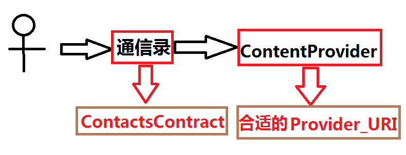
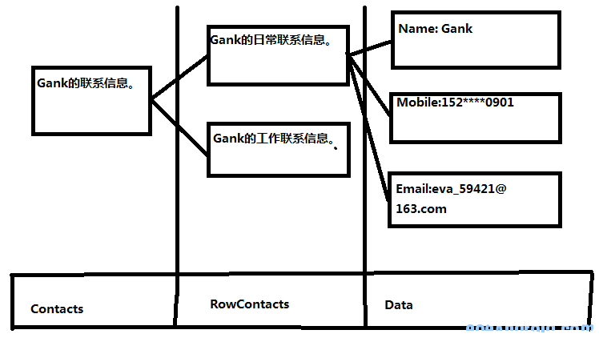

详解Android中的通信录模型
Android中的通信录操作给人的第一感觉就是晕，不知道怎么去用。可以看下这张图：

这幅图的意思是：操作通信录本质是去操作合适的ContentProvider，通过合适的ContentProvider去操作通讯录。
1：要想熟练的操作合适的ContentProvider，就必须要掌握一个类ContactsContract（2.0开始使用）。
现在可以思考一个新问题：Android中的联系人信息是如何存储的？
Android中的联系人信息都是存储在一个叫contacts2.db的数据库中。数据库的路径是：/data/data/com.android.provider.contacts/databases/contacts2.db（在这里推荐一个sqlite的查看工具：http://www.sqliteexpert.com/ 个人版是免费的）
继续思考一个新问题：这个数据库是如何来存储联系人信息的？
根据官方的文档：通信录是一个3层的数据存储模型（初看挺牛的，说穿了就是3张表）
我又画了一张图比较形象的反应这个“3层模型”。

第一层：Data层，每种独立的数据类型占一行。具体哪些独立的数据可以占一行，可以在mimetypes这张表中找到，原生Android的系统一共12种，例如name,phone,email ect..
第二层：RawContracts层，由Data层的多条数据组合成一个完整的联系人信息。
第三层：Contracts层，这一层主要注意与第二层的区别。大部分情况下这两层的数据时指同一个联系人的信息，即他们俩是一一对应的关系，但是有些特殊情况，这个我是查了一些老外的论坛加上自己的理解，例如，我做一个本地通信录和网络上的通信录同步的时候，可能有一个人他在本地存在，他在网络上也存在，这个时候Android就可以识别他们，认为他们两个其实是指同一个人。 （这种情况我没有试出来，我感觉这个其实是Android创造了这个概念之后，留给我们开发自己去实现的。）
上面说过“要想熟练的操作合适的ContentProvider，就必须要掌握一个类ContactsContract”，那么这个ContactsContract类是干什么的呢？
说穿了这个类就是去解释和翻译这个contacts2.db数据库的。
这个类超大6000+行代码， 但是确没有什么操作代码，几乎都是来解释contacts2.db数据库的。
这个类中有很多的内部接口和内部类，用来翻译一些表。 例如Data内部类，RawContacts内部类，等等。
下面我以一个实际的例子讲解一下操作过程：
问题：我有一个电话号码，现在想去查找这个电话号码主人的姓名。
第一步：我要确定用哪一个ContentProvider去查询，这个时候肯定想到去用含有电话号码的ContentProvider去查询电话号码所在的Contacts_ID。
第二步：通过Contacts_ID找到对应的Raw_Contacts_ID。
第三步：通过Raw_Contacts_ID找到对应的联系人姓名。
确定了操作步骤之后，肯定是去看文档了，谁也不能猜出来含有电话号码ContentProvider_URI.
通过查询文档： If you need to look up a contact by the phone number, use PhoneLookup.CONTENT_FILTER_URI, which is optimized for this purpose.
我们确定了URI之后就可以开始编写代码了。
public String lookupNameByPhoneNumber(Context context, String phoneNumber) { Uri uri = Uri.withAppendedPath(
ContactsContract.PhoneLookup.CONTENT_FILTER_URI,
Uri.encode(phoneNumber));
Cursor cursor = context.getContentResolver().query(uri,
new String[] { ContactsContract.PhoneLookup.DISPLAY_NAME },
null, null, null);
String name = null;
if (cursor == null) {
name = null;
}
try {
if (cursor.moveToFirst()) {
name = cursor.getColumnName(0);
}
} finally {
cursor.close();
}
return name;
}
看完这段代码，你可能想去问，第二步跟第三步跑哪里去了。这两步其实已经被封装在Resoler的query方法中了。如果真要我们编写这两部的话，那我们还不如不用ContentProvider来的轻松。
最后再来说下真机上的通信录模型，真机上的通信录其实就是原生通信录的扩展。增加一些东西。
最重要的一点，原生数据库里有的表，表字段，触发器，视图或索引，在真机上肯定也有。
如果想自己做一个通信录，也肯定要在原生的通信录上扩展，只能增加，不能减少。
想问为什么？
如果你少两张表的话，可能一些系统功能就崩溃了。
这就不符合google的目的了，我提供了一些功能，你可以使用修改，但是你别删除，所以google火了。